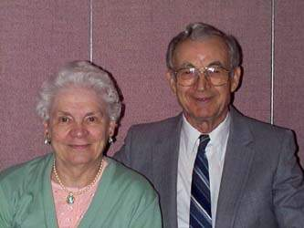
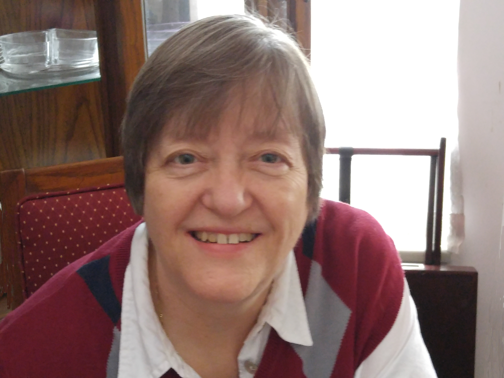
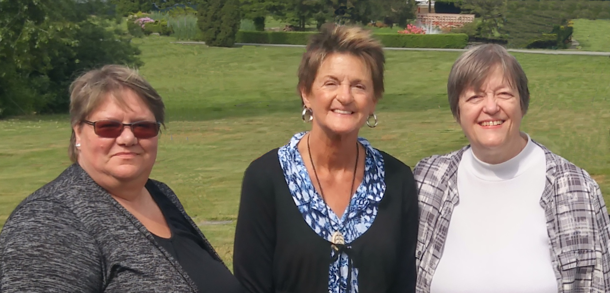

|
 FRED and VIOLA PAHL
Gerhart's father, Fred, passed away on January 20, 2005, at the age of 83 and 58 years of marriage. His mother, Viola, passed away on May 16, 2016, at the age of 90. They had been living in White Rock, which is south of
Vancouver on the Canada/US border. Fred was a clergyman and pastored a number of congegraations in Alberta, Saskatchewan and British Columbia. Viola was hadicapped from polio since 1948. Dispite this, she lived a very active a productive life. She became a computer "expert"
and has published several books which, in addition to much other information, are described on her own section of this website.
To go to Viola's "website," just click here where you will see links to her "farewell" message upon leaving this world as well as her memorial to Fred, biographical and family information, books and plays she authored, as well as serious and humerous "essays" reflecting her view of life. Also included are videos of her life and memorial service.
|

PENNY'S parents
Penny's parents lived in the Marshall Islands all their lives. Both of them have passed away.
|

PENNY with her sisters HERMY and JOSIE
Hermy and Josie are Penny's older and younger sisters. They live in Hawaii and California.
|
|
 SUE PAHL
Gerhart's sister, Sue, returned to live in Canada in November, 2001, after
being in Bangkok, Thailand, where she taught English to Thai college students
since 1997. Thailand was just the latest stop in her very interesting international career
which included teaching in Japan, China and Australia.
|
|
 SUE with her sisters JEANNIE and JANICE
Sue was adopted into the Pahl family when an infant. In recent years she was reunited with her two biological sisters, Jeannie (middle) and Janice (left). This has been a great story and, as Sue's sisters, we welcomed them both into our family.
|